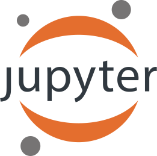

The Machine Learning Toolkit for Kubernetes
Get Started ContributeThe Kubeflow project is dedicated to making deployments of machine learning (ML) workflows on Kubernetes simple, portable and scalable. Our goal is not to recreate other services, but to provide a straightforward way to deploy best-of-breed open-source systems for ML to diverse infrastructures. Anywhere you are running Kubernetes, you should be able to run Kubeflow.
{{% /blocks/lead %}} {{< blocks/section color="main" >}} A JupyterHub to create and manage interactive Jupyter notebooks. Project Jupyter is a non-profit, open-source project to support interactive data science and scientific computing across all programming languages.
{{< /blocks/section >}} {{< blocks/section color="main" >}}A TensorFlow training controller that can be configured to use either CPUs or GPUs and be dynamically adjusted to the size of a cluster with a single setting. We also provide a TensorFlow job operator.
{{< /blocks/section >}} {{< blocks/section color="main" >}}A TensorFlow Serving container to export trained TensorFlow models to Kubernetes. We also integrate with Seldon Core, an open source platform for deploying machine learning models on Kubernetes, and NVIDIA TensorRT Inference Server for maximized GPU utilization when deploying ML/DL models at scale.
{{< /blocks/section >}} {{< blocks/section color="main" >}}A solution to deploy and manage end-to-end machine learning workflows, providing rapid and reliable ML experimentation.
{{< /blocks/section >}} {{< blocks/section color="main" >}}Our development plans go beyond TensorFlow, and we are working hard to include PyTorch, MXNet, Chainer, and more. We also integrate with Ambassador for ingress and Pachyderm for managing your data science pipelines.
{{< /blocks/section >}} {{< blocks/section color="main" >}}We are an open and welcoming community of software developers, data scientists, and organizations that are working to make it easier to develop and deploy scalable ML workflows across the industry. Start contributing.
{{< /blocks/section >}}